Deine erste Karte: ein Raum zum Herumlaufen
Von der leeren Karte zum Raum, durch den du im Spiel laufen kannst: Brushes, Texturen, Caulk, ein Licht, der Spielerstart, der Optimierer, Bauen mit dem Fortschrittsfenster, im Editor hindurchlaufen - und die .pk3 fürs Spiel.
Jedes Bild auf dieser Seite entstand, während das Programm genau diese Schritte ausführte, und der Selbsttest prüft das Ergebnis jedes Mal: der Raum baut ohne Leck, der Spieler steht am Start und kann laufen, und die .pk3 enthält die Karte. Menüs und Tastenkürzel sind die von NetRadiant-Custom, darum passen auch andere Mapping-Anleitungen - die Seite Der Karten-Editor erklärt die Fenster.
Schritte#
- 1
Spiel einrichten. Schalte in der Modusleiste auf Karten-Editor. Der Editor nimmt das Spiel, für das das Programm eingerichtet ist; die Ordner kommen aus den Programmeinstellungen. Bearbeiten > Einstellungen, Seite Spiel, zeigt das Spiel, Seite Pfade den Engine-Pfad (leer: aus den Spielordnern des Programms).
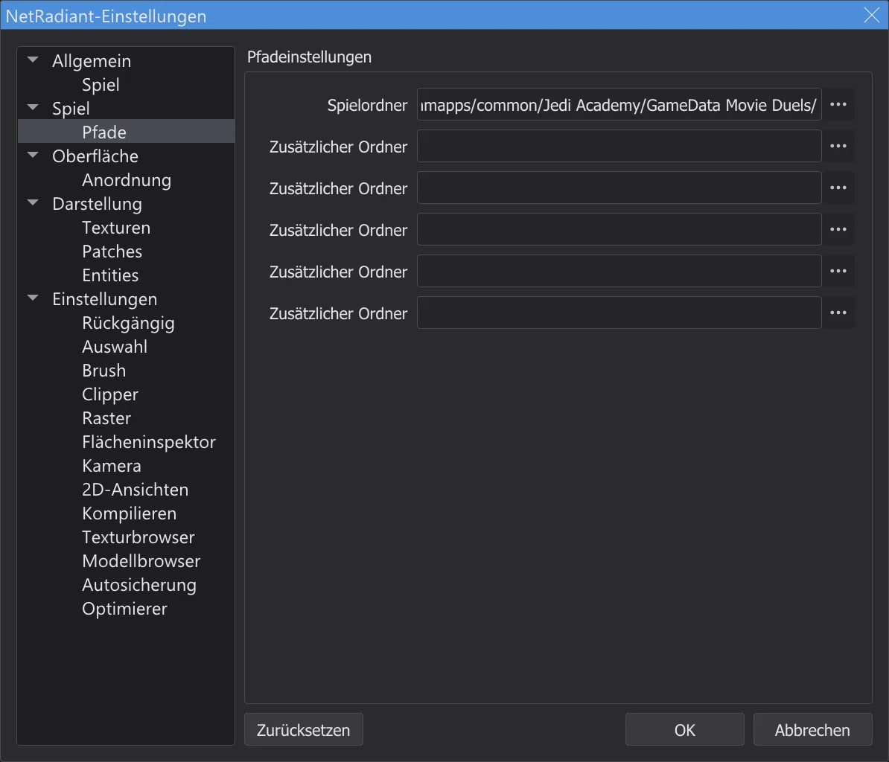
Einstellungen, Seite Pfade. - 2
Neue Karte. Datei > Neue Karte beginnt eine leere Karte - nur der worldspawn. Zoome die 2D-Ansicht mit dem Mausrad etwas heraus.
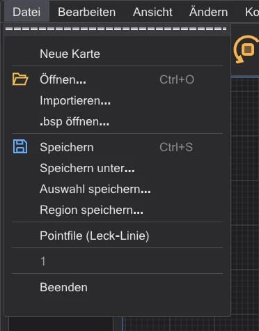
Das Menü Datei. - 3
Einen Brush ziehen. Ziehe in der 2D-Draufsicht mit der linken Maustaste von einer Ecke zur anderen - hier von -256 -256 bis 256 256, ein Kasten 512 Einheiten breit. Die Höhe kommt aus der Arbeitszone (zuerst -64 bis 64).
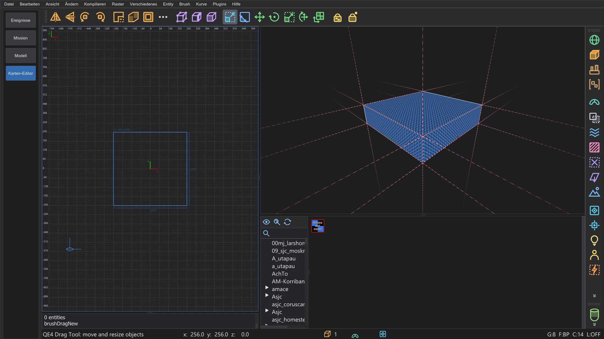
Der neue Brush, gewählt (rot). - 4
Höher machen. Num 1 schaltet die 2D-Ansicht auf die Vorderansicht (XZ). Greife knapp über der Oberkante und ziehe nach oben: die obere Fläche folgt dem Raster. Hier bis 192 - der Raum ist jetzt 256 hoch. Num 7 geht zurück zur Draufsicht.
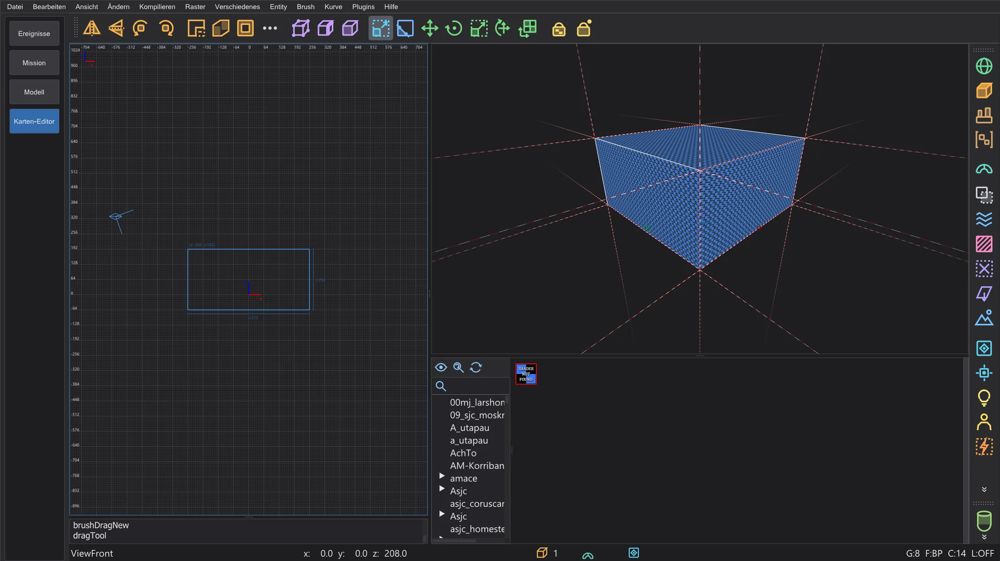
Die Vorderansicht: der Brush ist jetzt 256 hoch. - 5
Textur. Doppelklicke im Baum des Texturbrowsers auf einen Ordner und klicke mit der linken Maustaste auf eine Textur: jede Fläche des gewählten Brushes bekommt sie. Nimm für die Wände etwas ohne Durchsicht.
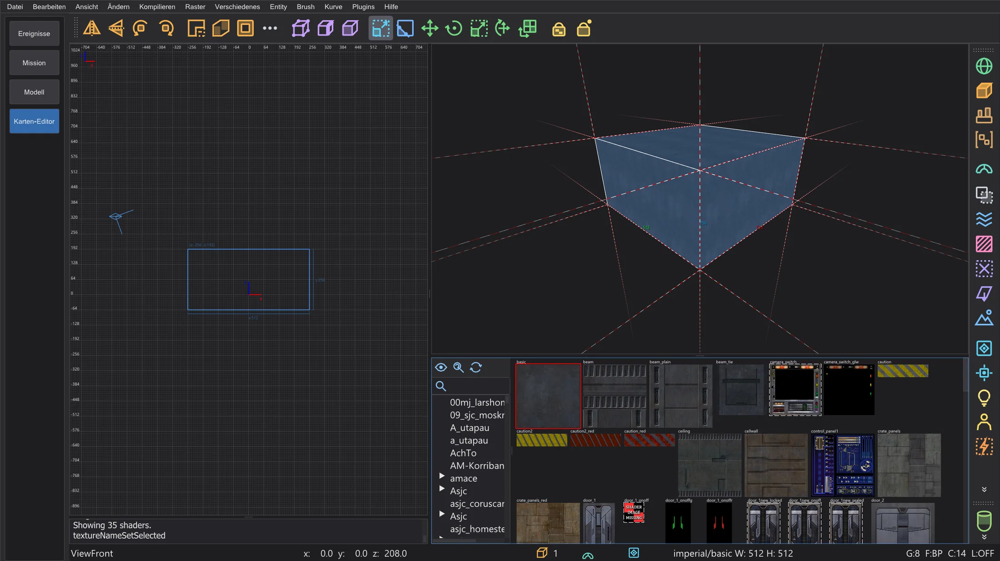
Die Wandtextur auf allen sechs Flächen. - 6
Aushöhlen. Der Knopf CSG-Werkzeug der Werkzeugleiste öffnet das CSG-Werkzeug. Lass die Dicke bei 16, schalte den Caulk-Knopf erst einmal aus (das macht später AutoCaulk) und drücke Aushöhlen::Flächen ziehen: sechs Wände, 16 dick, wachsen nach außen um den Raum, innen bleibt genau der gezogene Kasten. Der Knopf Room (Make Room) macht dasselbe mit der Rastergröße als Dicke.
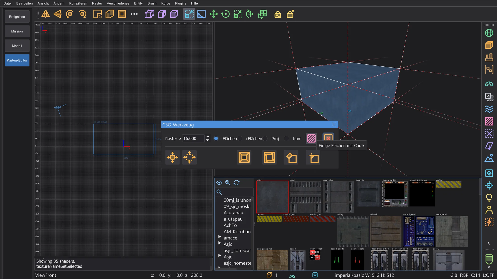
CSG-Werkzeug mit ausgeschaltetem Caulk-Knopf. - 7
Eine Bodentextur. In der Vorderansicht wählt Umschalt + Linksklick auf den Boden nur den Boden-Brush; klicke im Browser auf eine Bodentextur. Esc hebt die Auswahl auf.
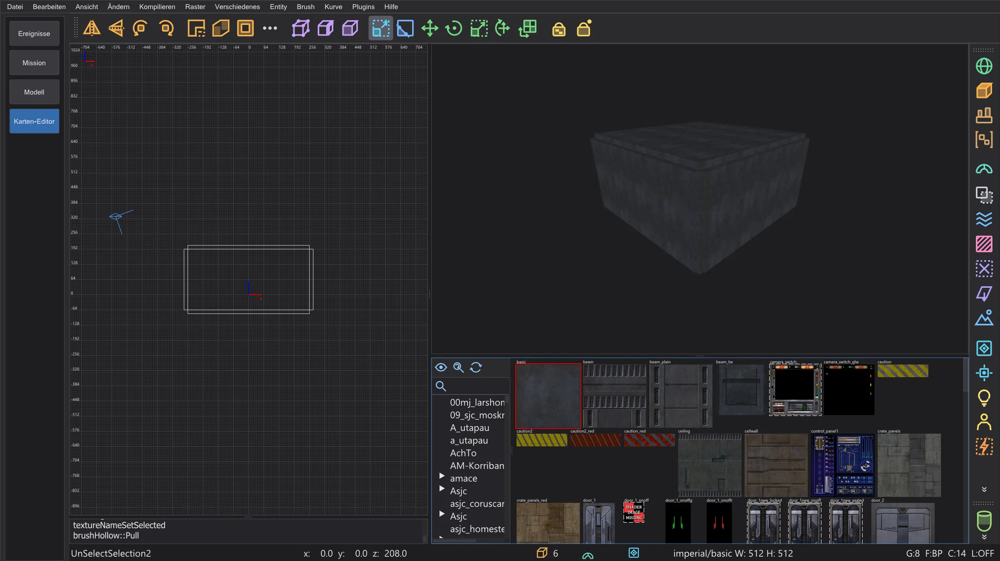
Der hohle Raum: sechs Wand-Brushes. - 8
Ein Licht. Rechtsklick in den Raum in der 2D-Ansicht: das Entity-Menü öffnet sich. light fragt nach der Stärke (300 ist ein guter Anfang) - OK setzt es dorthin, wo du geklickt hast.
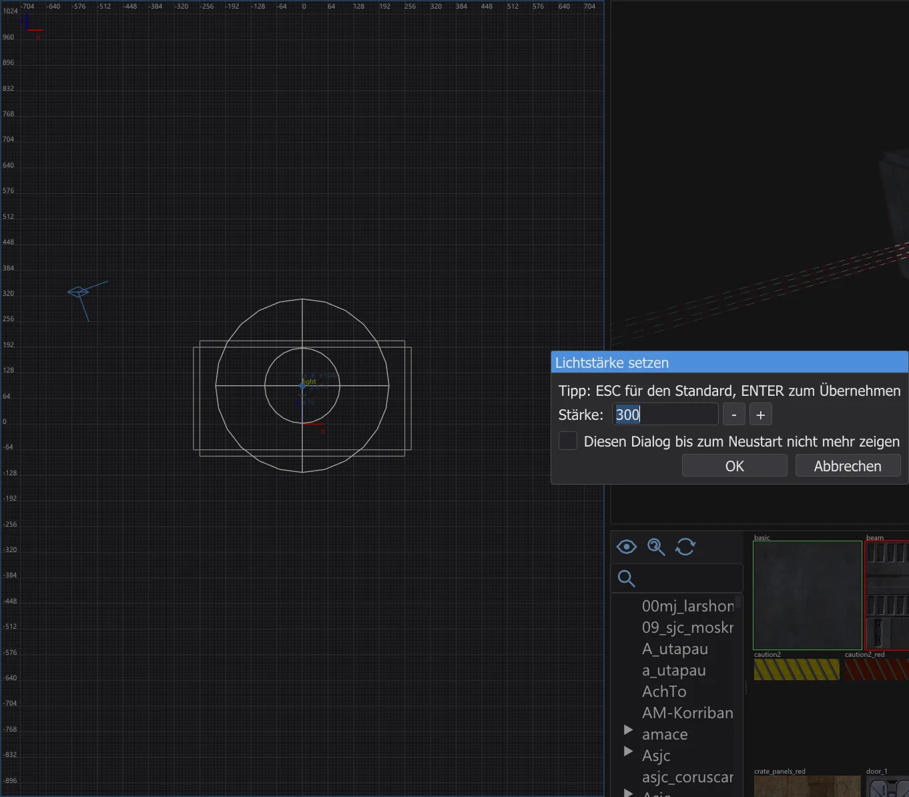
Lichtstärke setzen. - 9
Wo der Spieler beginnt. Rechtsklick nahe am Boden: info > info_player_start. Ohne ihn weiß das Spiel nicht, wohin der Spieler kommt. Sein Kasten steht auf dem Boden.
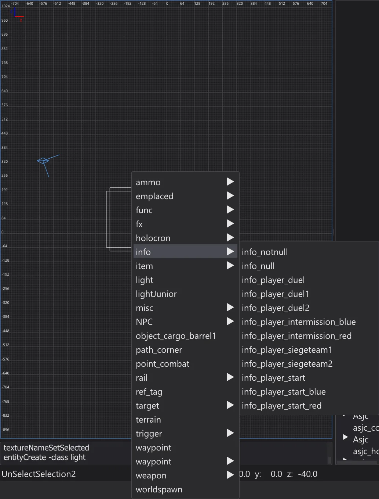
Das Entity-Menü, Untermenü info. - 10
Speichern. Datei > Speichern unter - zum Beispiel
meinekarte.mapin einem eigenen Ordnermaps, außerhalb der Spielordner. Der Dateiname wird der Name der Karte im Spiel.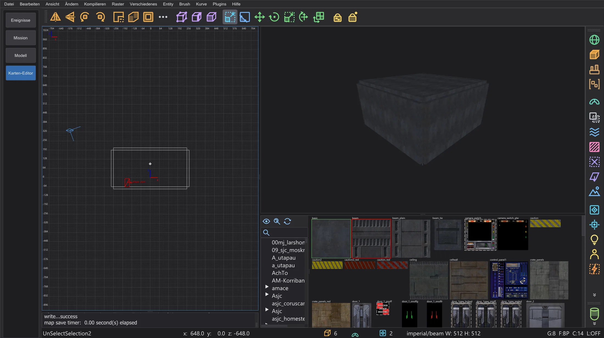
Der gespeicherte Raum im Editor. - 11
Außen Caulk. Flächen, die niemand sieht, kosten trotzdem Lightmap-Platz und Zeichenzeit. Fliege mit der Kamera in den Raum, ziehe in der Draufsicht mit Umschalt + rechter Maustaste ein Rechteck um den ganzen Raum und drücke F4 (Brush > Auswahl automatisch caulken): jede Fläche, die man von innen nicht sehen kann, wird Caulk. Man kann auch von Anfang an in Caulk bauen: neuen Brushes die Caulk-Textur geben und nur die sichtbaren Flächen texturieren.
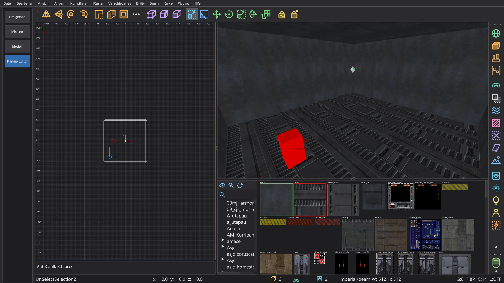
Nach AutoCaulk: die Kamera im Raum. - 12
Prüfen. Kompilieren > Optimierer zählt die Grenzen des Spiels und sucht Bauprobleme, bevor du kompilierst. Ein grüner Raum hat nichts zu beheben.
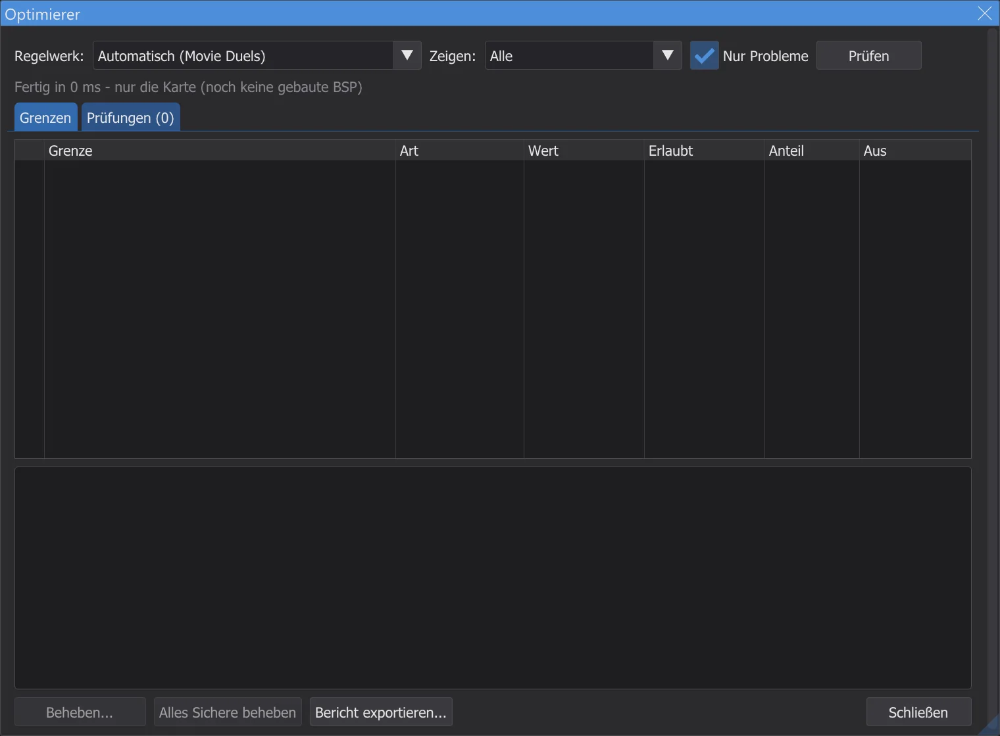
Der Optimierer für den Tutorial-Raum. - 13
Bauen. Kompilieren > [Final] Fast startet q3map2 dreimal - BSP, VIS und das Licht mit Bounce. Das Fortschrittsfenster zeigt die Stufe, den Fortschritt und die Restzeit. Hat die Karte ein Leck, sagt es die Konsole in Rot, und eine Linie in der 2D-Ansicht zeigt den Weg nach draußen - siehe Karten-Editor: Karte bauen.
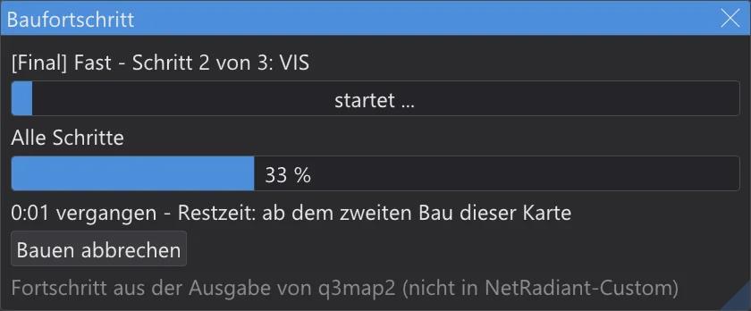
Das Fortschrittsfenster während des Baus. - 14
Hindurchlaufen. Ansicht > Spielen: an info_player_start beginnen und dann Im Editor spielen (F6): du stehst am info_player_start und läufst mit W A S D, springst mit der Leertaste; Esc beendet. Das geht sogar ohne Kompilieren - die Kollision kommt direkt aus den Brushes (siehe Im Editor spielen).
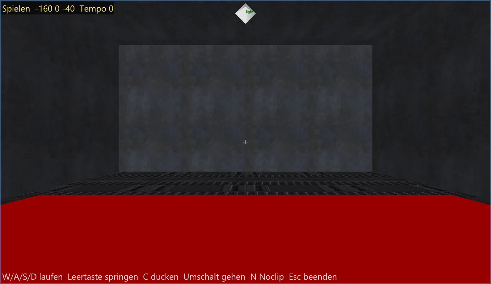
Im Editor durch den Raum laufen. - 15
Ins Spiel. Kompilieren > Karte als .pk3 packen packt
maps/meinekarte.bspinmeinekarte.pk3neben der .bsp. Das Programm schreibt nie in die Spielordner - kopiere die .pk3 selbst nachGameData/base(Jedi Academy, Jedi Outcast) oder in den Ordner deiner Mod (zum Beispiel Movie Duels). Starte das Spiel, öffne die Konsole mit Umschalt+~ und gibdevmap meinekarteein.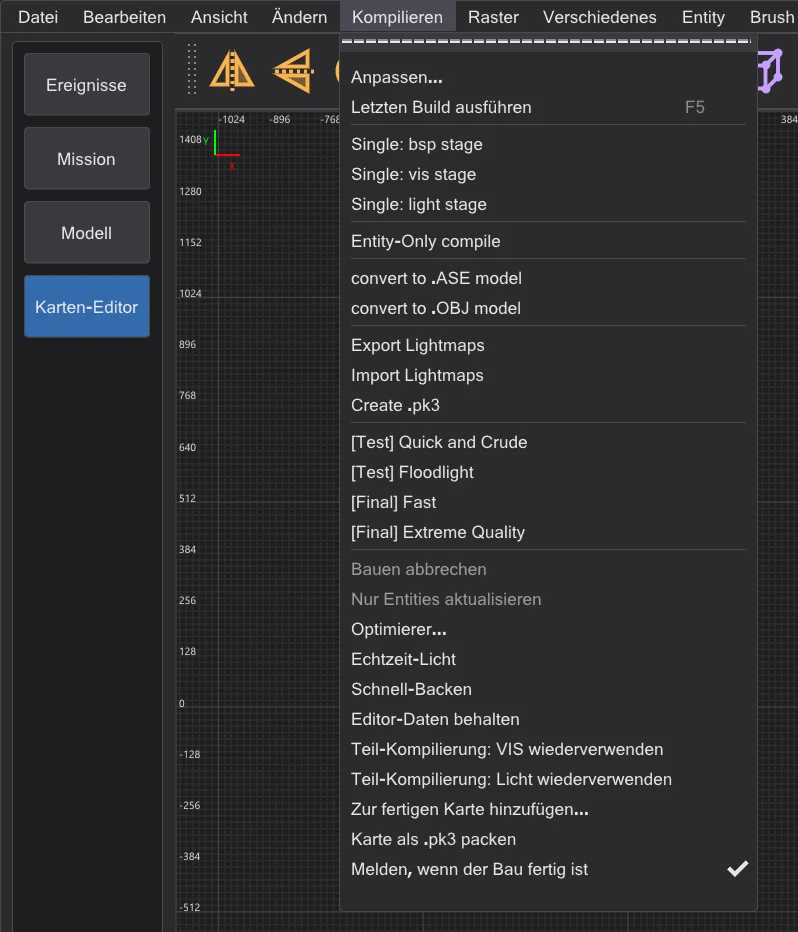
Kompilieren mit Karte als .pk3 packen (nicht in NetRadiant-Custom).


Wie es weitergeht#
- Brushes, Clipper, Patches und die CSG-Werkzeuge: Karten-Editor: Bauwerkzeuge.
- Build-Menü, Lecks, Portale und der Bau-Ordner: Karten-Editor: Karte bauen; schnellere Neubauten: Karten-Editor: Bau-Fortschritt und Teil-Kompilierungen.
- Grenzen des Spiels und Behebungen: Karten-Editor: Optimierer und Grenzen; die Licht-Vorschau in der Kamera: Karten-Editor: Tempo und Echtzeit-Licht.
- Terrain, Logik-Ansicht, Spiegel-Modus und Spielen im Editor: Karten-Editor: Terrain, Spielen, Logik, Spiegel und mehr.
- Eine Zwischensequenz auf deiner Karte: Deine eigene Mission: Start auf Taspir.